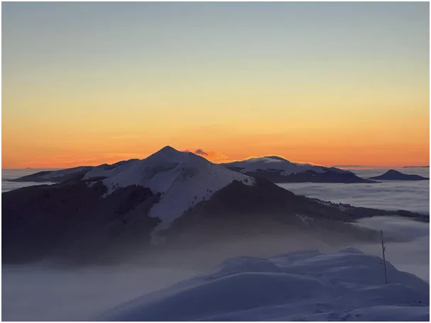
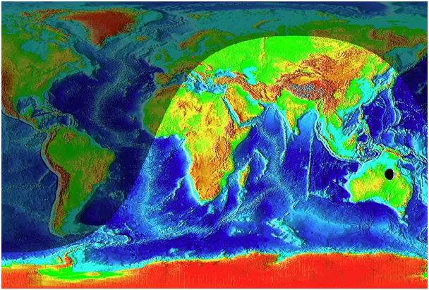
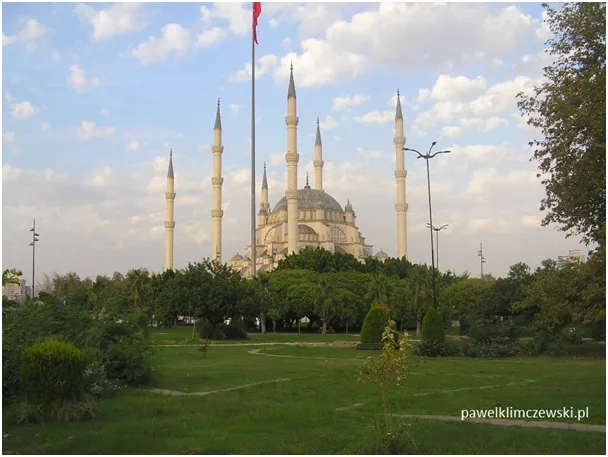

Ustrzyki Górne kontra Świnoujście w starciu na minarety.
W najbliższych dniach z powodu skrajnego nachylenia osi Ziemi w stosunku do płaszczyzny, po której obiegamy Słońce całą dobę oświetlony jest obszar za południowym kołem podbiegunowym, a za północnym Kołem Polarnym trwa całodobowa noc. W każdej chwili dokładnie połowa Ziemi jest oświetlona a połowa w cieniu, ale gdy odwzorujemy kulę na prostokątnej mapie Merkatora dostajemy obraz widoczny pod zdjęciami. Z kosmicznego powodu dziś wschód Słońca w Bieszczadach jest prawie godzinę wcześniej (7:20) niż w Świnoujściu (8:17). Musimy poczekać do 21 marca, aby wschód przypadał o tej samej godzinie na każdym południku.
W islamie życie przebiega perfekcyjnie w rytmie Słońca , a jego godziny wschodów i zachodów ciągle się zmieniają. Modlitwy i przerwy w pracy są dokładnie wyznaczone od świtu do zachodu Słońca w połówkach czasu między południem a początkiem i końcem dnia. Jest to bardzo praktyczne, w Turcji nie noszę ze sobą ani zegarka ani telefonu, wystarczy zerknąć na niebo lub na cień znajomego drzewa, aby się zorientować ile czasu mamy do posiłku, czy zamknięcia sklepów.

W świecie przed telegrafem każda lokalna społeczność musiała mieć swoje obserwatorium astronomiczne i miała. Jest nim strzelisty minaret z ostrym zakończeniem. Jego cień co do sekundy wskazuje astronomiczne południe i dowolnie wybrane chwile, a jego długość dzień w kalendarzu. Minaret jest najzwyklejszym zegarem słonecznym o dużej dokładności z powodu długiej iglicy.

Jeśli w polskiej polityce nie zmienimy ostro kursu pierwsze minarety na ulicach naszych miast zobaczmy wkrótce.
Warszawa ma już dwa autentyczne meczety, a o tym jak działa minaret pod nazwą Pałac Kultury i Nauki imienia Józefa Stalina w Warszawie napiszę w innym odcinku.
Paweł Klimczewski